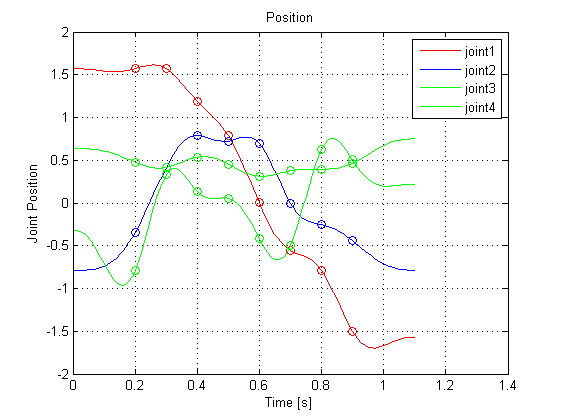
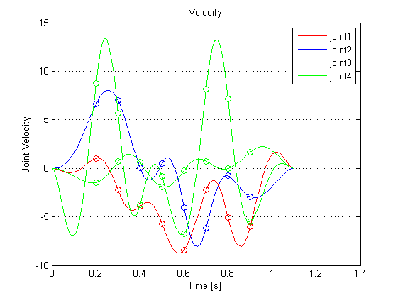
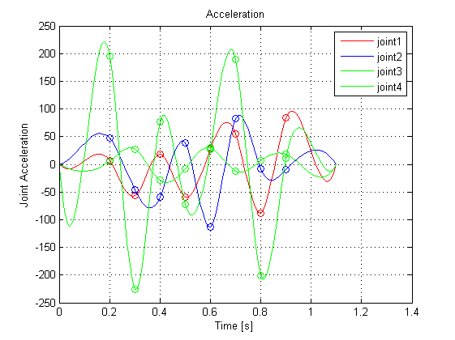
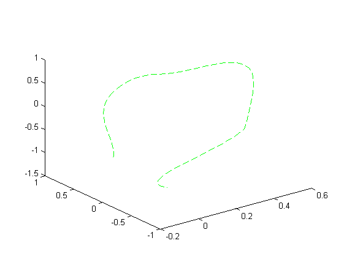
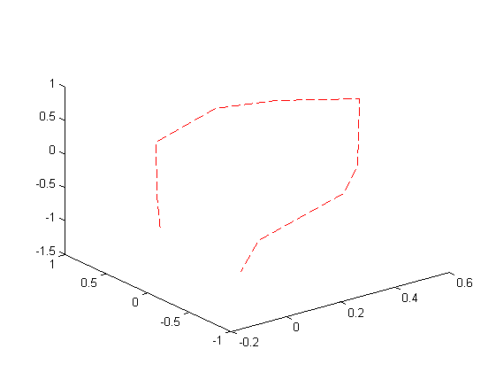

Kinematics and Dynamics of Mechatronic Systems
4th laboratory task
Piotr Bury , Maciej Paczocha
Contents
For vectors of joint variables Q1, Q2, … QN corresponding to the prepared motion paths
plan the spline joint trajectory of the type 5-(5)-5.
%planning of 10 segment polynomial spline joint trajectories %corresponding to the assumed path Q1=[1.570796 1.570796 1.570796 1.19029 0.785398 0 -0.5586 -0.7854 -1.49949 -1.5708]; Q2=[-0.7854 -0.34162 0.420663 0.789412 0.723839 0.694738 0 -0.25614 -0.44343 -0.7854]; Q3=[0.636396 0.477598 0.416293 0.535257 0.45299 0.31241 0.377359 0.394715 0.466154 0.749533]; Q4=[-0.32503 -0.7846 0.333245 0.134268 0.055229 -0.41462 -0.49983 0.627971 0.505613 0.220485]; % setting the duration time of each trajectory segment (in seconds) T=[0.2,0.1,0.1,0.1,0.1,0.1,0.1,0.1,0.2]; % setting values of initial and final joint velocity as well as % the initial and final joint acceleration (usually they are set to 0s) V=[0 0];A=[0 0]; % planning of the initial trajectory of type 555 (evaluation of the % coefficients) y1=fun_path(Q1,T,V,A); y2=fun_path(Q2,T,V,A); y3=fun_path(Q3,T,V,A); y4=fun_path(Q4,T,V,A); % setting the time axis resolution dt=0.01; % calculate joint displacements, velocities and accelerations for 3 joints wb1=waitbar(0,'calculate joint displacement'); [q1,v1,aa1,tt,ti]=fun_graph(y1,T,dt,'r'); i=1;waitbar(i/3,wb1) [q2,v2,aa2,tt,ti]=fun_graph(y2,T,dt,'b'); i=2;waitbar(i/3,wb1) [q3,v3,aa3,tt,ti]=fun_graph(y3,T,dt,'g'); i=3;waitbar(i/3,wb1) [q4,v4,aa4,tt,ti]=fun_graph(y4,T,dt,'g'); i=4;waitbar(i/3,wb1) close(wb1);  
Evaluate, present graphically and assess the resultant Cartesian path and the broken line resulting from composition of Q1, Q2, … QN vectors for the both paths
syms th1 d2 th3 th4 a2 a3 % calculate displacement in 3D - formulas XX=cos(th1)*(a2+a3*cos(th3)); YY=sin(th1)*(a2+a3*cos(th3)); ZZ=d2-a3*sin(th3); % calculate the 3D path X=double(subs(XX,{th1,d2,th3,th4,a2,a3},{q1,q2,q3,q4,0.1,0.5})); Y=double(subs(YY,{th1,d2,th3,th4,a2,a3},{q1,q2,q3,q4,0.1,0.5})); Z=double(subs(ZZ,{th1,d2,th3,th4,a2,a3},{q1,q2,q3,q4,0.1,0.5})); % calculate the 3D broken line XQ=double(subs(XX,{th1,d2,th3,th4,a2,a3},{Q1,Q2,Q3,q4,0.1,0.5})); YQ=double(subs(YY,{th1,d2,th3,th4,a2,a3},{Q1,Q2,Q3,q4,0.1,0.5})); ZQ=double(subs(ZZ,{th1,d2,th3,th4,a2,a3},{Q1,Q2,Q3,q4,0.1,0.5}));
%Draw the paths figure(4) plot3(X',Y',Z','--g'); figure(5) plot3(XQ,YQ,ZQ,'--r'); 
%Concatenating coodinate vectors to form data for both paths
Path3D=[X,Y,Z];
BrokenLine3D=[XQ',YQ',ZQ'];
Path3DLength = sum( sqrt( sum( diff(Path3D,1,1).^2 ,2)) ,1)
BrokenLine3DLength = sum( sqrt( sum( diff(BrokenLine3D,1,1).^2 ,2)) ,1)
Path3DLength =
4.5189
BrokenLine3DLength =
4.3293